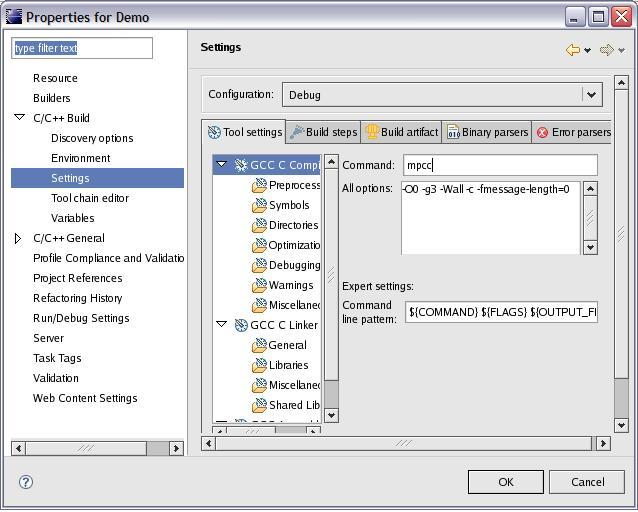
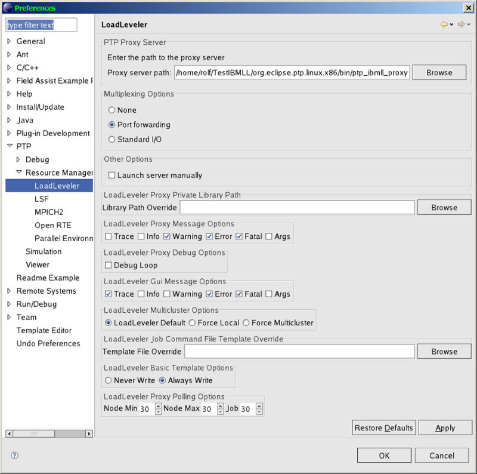
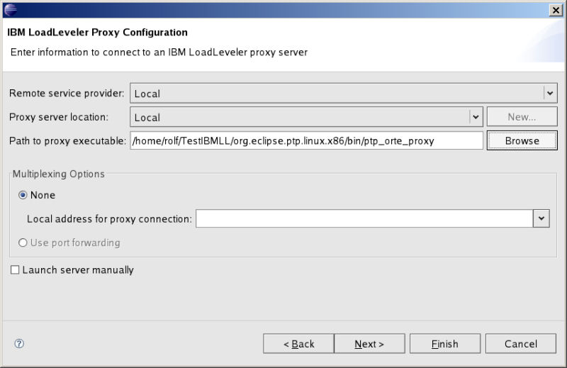
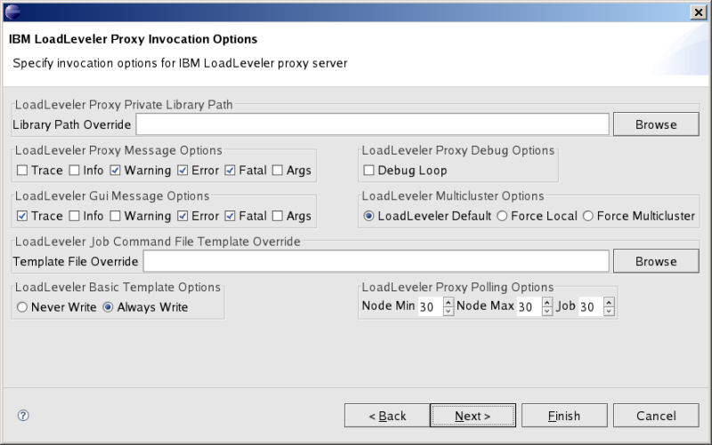
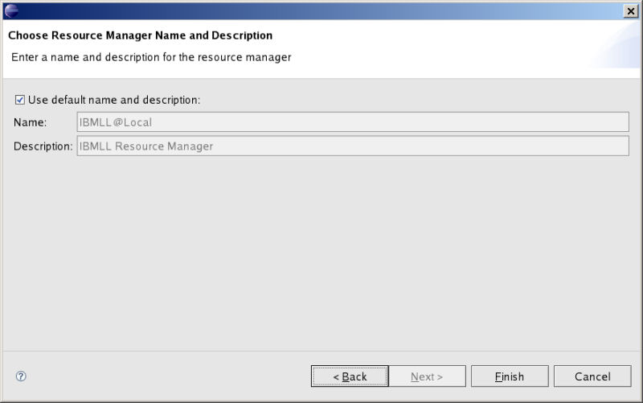
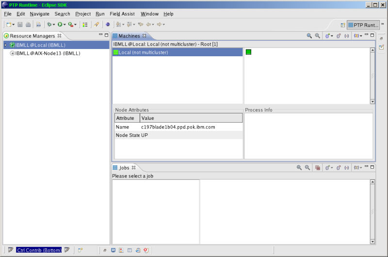
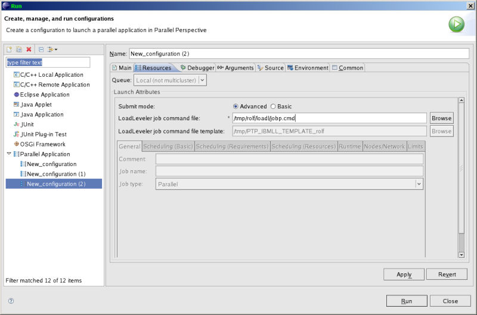
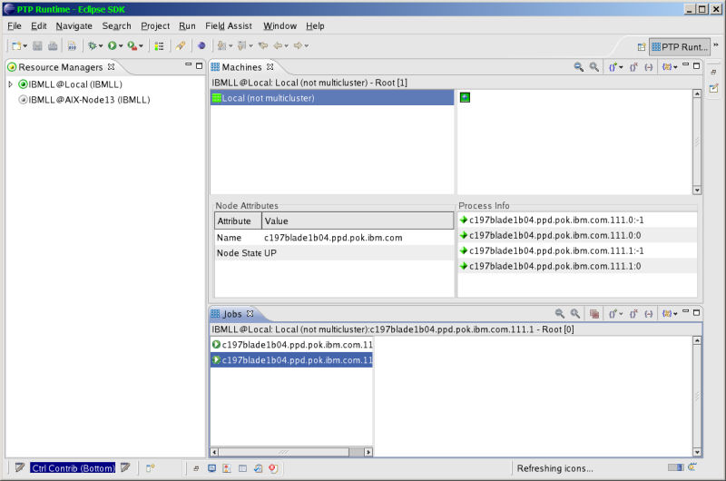
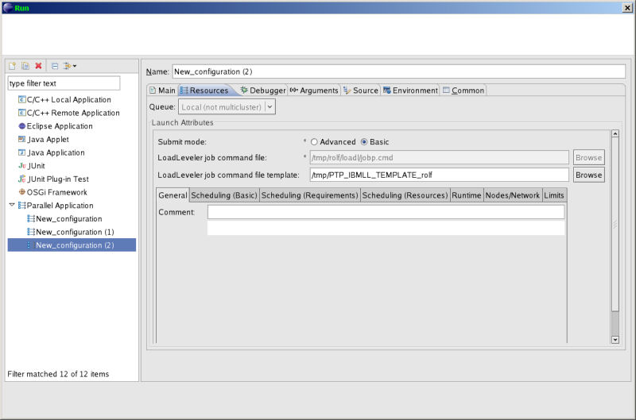
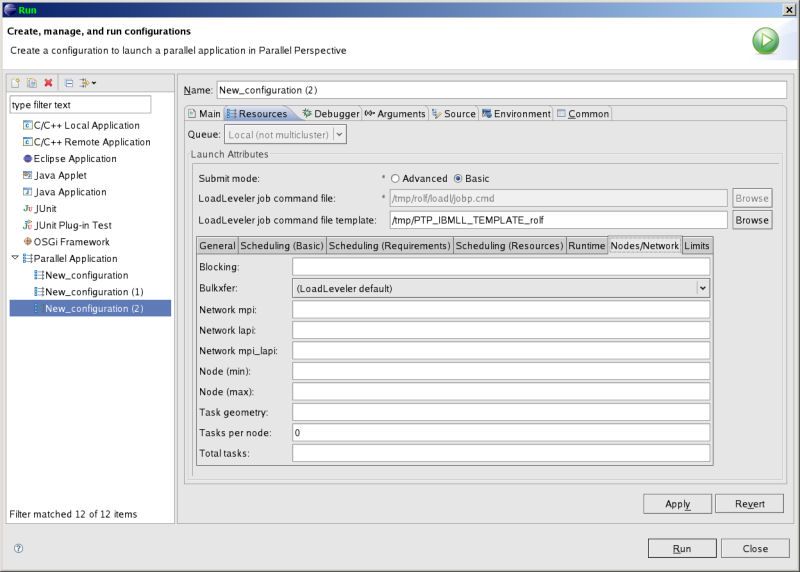

The IBM LoadLeveler (LL) Eclipse plug-in, part of the Parallel Tools Platform (PTP), allows you to run a parallel or serial application (job) using the Tivoli Workload Scheduler LoadLeveler from within the PTP framework. In addition to running parallel and serial jobs, you can monitor their status and control their execution from within PTP.
Note: PTP 6.0 does not require the creation of separate Resource Managers and instead, the target configuration is specified on the Run Configuration dialog. This document describes the legacy (proxy-based) Resource Managers supported in versions of PTP prior to PTP 6.0. Target System Configurations replace Resource Managers in PTP 6.0 and beyond.
In addition to having Eclipse and PTP installed, you need to have the following software packages installed.
See the following IBM Tivoli Workload Scheduler LoadLeveler V3.4 guides for specific LoadLeveler installation and configuration requirements:
Define an appropriate project, either a C/C++ project using CDT or a FORTRAN project using Photran. You can define either a standard make project or a managed make project.
You should use the following compiler invocation commands to invoke the compiler if you want to build a parallel program to run with the LoadLeveler proxy, either in your makefile, or when specifying the compiler and linker in a managed make project.
The following image shows how the compiler is specified for a managed make project. The correct linker should also be specified by clicking the settings for the linker.
Once you have created your project, you should switch to the PTP runtime perspective, and set up the default preferences for LoadLeveler and specify the required resource manager. This setup needs to only be done once.
To setup the default preferences: Window->Preferences->PTP->Resource Managers->LoadLeveler. The IBMLL preferences panel is displayed. Here, you specify the default path for a resource manager to be used for LoadLeveler.
In addition to the location of the proxy, you may specify parameters that control the execution of the proxy and the front end gui.
Once you have set up preferences, you should create the resource manager for LoadLeveler: To do this, right-click in the resource managers view and selecting Add Resource Manager from the menu. A resource manager wizard will be displayed. Select IBMLL from the list of resource manager types and click next. The next panel displayed configures the IBMLL resource manager. Select the Remote service provider and proxy server location from the dropdown lists. You can also create a new proxy server location by clicking the New button in this pane. Specify the path to the proxy server executable, or just accept the value filled in as default from the preferences panel. Uncheck the Launch server manually and click next again. On the final page of the resource configuration manager wizard, either accept the default resource manager name, or uncheck the checkbox and enter a name and description for the resource manager. Then click finish to create the resource manager entry.
The image below shows the series of IBMLL proxy configuration panels of the resource manager wizard.
Configure the resource manager.
Override preferences setings specifically for this occurance of the resource manager.
Name this occurance of the resource manager.
You may have as many resource managers defined as you require for your system configuration.
Once you have defined a resource manager, you must start it before it can run a parallel application using that resource manager. To start a resource manager, right-click over the name of the resource manager in the resource manager view then select Start resource manager from the popup menu. Once started, the icon for the selected resource manager will turn green.
If necessary, you can stop a resource manager by right-clicking over its name in the resource manager and selecting Stop resource manager from the popup menu. Normally, a resource manger will shutdown automatically when PTP is shutdown, and if it was running when PTP was shutdown, then it will automatically start when PTP is started again.
Once an application has been compiled, the first step in running the application is to be sure the resource manager for LoadLeveler is running on a node in the LoadLeveler cluster where you intend to start the application. To do this, check the resource manager's entry in the resource manager view. The icon for the resource manager should be green. If it is not green, then right click over the resource manager's name and select Start resource manager from the popup menu to start the resource manager.
Before running an application, it must have a launch configuration defined for it. A launch configuration contains all of the settings required to run the application. The values entered in a launch configuration are saved so that the next time the application is run using the same launch configuration, those values do not need to be entered again.
To create a launch configuration, click the Run menu in the Eclipse menubar and select Open Run Dialog. Alternatively, click the dropdown next to the run icon in the Eclipse toolbar and select Open Run Dialog. When the run dialog is displayed, right click over Parallel Application and click New from the menu. This will create a new launch configuration. Set its name to the desired value. Select the Main tab and fill in the name of the project and the application program.

Make sure that the debugger tab has an appropriate debugger selected. Fill in the Arguments tab with any application program arguments. Fill in the Environment tab with any environment variable settings required by the application.
The Resources tab is the tab where invocation options unique to LoadLeveler. When it is initially displayed, it will appear with the advanced option selected allowing specification of an existing complete LoadLeveler job command file (no substitutions permitted). This is intended for the experienced LoadLeveler user who has constructed his/her own complex job command file to run parallel or serial jobs.
When Run is selected the job command file is passed to the LoadLeveler Resource manager proxy and is submitted to LoadLeveler for execution. When the job starts it will appear in the PTP view.
If the Basic option is selected then you will be permitted to specify a template file for parameter value substitution. Multiple tabbed panels will be activated to allow specification of a subset of LoadLeveler Job Command file parameters. If you need to specify a parameter not supported by the tabbed panels then you must override the template file being used and add the parameter to your own template.
Example of the Nodes/Network Tab
Currently, only a subset of LoadLeveler Job Command File parameters can be specified on the Tabbed Panels. The following
is an example of the template file used by the LoadLeveler Resource manager and all of the possible parameters. Additionally,
this template lists those parameters that are not supported by the Resource Manager. If
you want to use any parameters not supported by the tabbed panels then copy the template file to your own file
and customize your own template file.
#!/bin/sh
# @ account_no = <<<LL_PTP_ACCOUNT_NO>>>
# @ arguments = <<<progArgs>>>
#(NOT SUPPORTED)# @ bg_connection
#(NOT SUPPORTED)# @ bg_partition
#(NOT SUPPORTED)# @ bg_requirements
#(NOT SUPPORTED)# @ bg_route
#(NOT SUPPORTED)# @ bg_shape
#(NOT SUPPORTED)# @ bg_size
# @ blocking = <<<LL_PTP_BLOCKING>>>
# @ bulkxfer = <<<LL_PTP_BULKXFER>>>
# @ checkpoint = <<<LL_PTP_CHECKPOINT>>>
# @ ckpt_dir = <<<LL_PTP_CKPT_DIR>>>
# @ ckpt_execute_dir = <<<LL_PTP_CKPT_EXECUTE_DIR>>>
# @ ckpt_file = <<<LL_PTP_CKPT_FILE>>>
# @ ckpt_time_limit = <<<LL_PTP_CKPT_TIME_LIMIT_HARD>>>,<<<LL_PTP_CKPT_TIME_LIMIT_SOFT>>>
# @ class = <<<LL_PTP_CLASS>>>
# @ cluster_input_file = <<<LL_PTP_CLUSTER_INPUT_FILE_1>>>
# @ cluster_input_file = <<<LL_PTP_CLUSTER_INPUT_FILE_2>>>
# @ cluster_input_file = <<<LL_PTP_CLUSTER_INPUT_FILE_3>>>
# @ cluster_list = <<<LL_PTP_CLUSTER_LIST>>>
# @ cluster_output_file = <<<LL_PTP_CLUSTER_OUTPUT_FILE_1>>>
# @ cluster_output_file = <<<LL_PTP_CLUSTER_OUTPUT_FILE_2>>>
# @ cluster_output_file = <<<LL_PTP_CLUSTER_OUTPUT_FILE_3>>>
# @ comment = <<<LL_PTP_COMMENT>>>
# @ core_limit = <<<LL_PTP_CORE_LIMIT_HARD>>>,<<<LL_PTP_CORE_LIMIT_SOFT>>>
#(NOT SUPPORTED)# @ coschedule
# @ cpu_limit = <<<LL_PTP_CPU_LIMIT_HARD>>>,<<<LL_PTP_CPU_LIMIT_SOFT>>>
# @ data_limit = <<<LL_PTP_DATA_LIMIT_HARD>>>,<<<LL_PTP_DATA_LIMIT_SOFT>>>
#(NOT SUPPORTED)# @ dependency
# @ env_copy = <<<LL_PTP_ENV_COPY>>>
# @ environment = <<<LL_PTP_ENVIRONMENT>>>
# @ error = <<<LL_PTP_ERROR>>>
# @ executable = <<<execPath>>>/<<<execName>>>
# @ executable = <<<LL_PTP_EXECUTABLE>>>
# @ file_limit = <<<LL_PTP_FILE_LIMIT_HARD>>>,<<<LL_PTP_FILE_LIMIT_SOFT>>>
# @ group = <<<LL_PTP_GROUP>>>
#(NOT SUPPORTED)# @ hold
# @ image_size = <<<LL_PTP_IMAGE_SIZE>>>
# @ initialdir = <<<workingDir>>>
# @ initialdir = <<<LL_PTP_INITIALDIR>>>
# @ input = <<<LL_PTP_INPUT>>>
# @ job_cpu_limit = <<<LL_PTP_JOB_CPU_LIMIT_HARD>>>, <<<LL_PTP_JOB_CPU_LIMIT_SOFT>>>
# @ job_name = <<<LL_PTP_JOB_NAME>>>
# @ job_type = <<<LL_PTP_JOB_TYPE>>>
# @ large_page = <<<LL_PTP_LARGE_PAGE>>>
#(NOT SUPPORTED)# @ max_processors
# @ mcm_affinity_options = <<<LL_PTP_MCM_AFFINITY_OPTIONS>>>
#(NOT SUPPORTED)# @ min_processors
# @ network.MPI = <<<LL_PTP_NETWORK_MPI>>>
# @ network.LAPI = <<<LL_PTP_NETWORK_LAPI>>>
# @ network.MPI_LAPI = <<<LL_PTP_NETWORK_MPI_LAPI>>>
# @ node = <<<LL_PTP_NODE_MIN>>>,<<<LL_PTP_NODE_MAX>>>
# @ node_usage = <<<LL_PTP_NODE_USAGE>>>
# @ notification = <<<LL_PTP_NOTIFICATION>>>
# @ notify_user = <<<LL_PTP_NOTIFY_USER>>>
# @ output = <<<LL_PTP_OUTPUT>>>
# @ preferences = <<<LL_PTP_PREFERENCES>>>
# @ requirements = <<<LL_PTP_REQUIREMENTS>>>
# @ resources = <<<LL_PTP_RESOURCES>>>
# @ restart = <<<LL_PTP_RESTART>>>
# @ restart_from_ckpt = <<<LL_PTP_RESTART_FROM_CKPT>>>
#(NOT SUPPORTED)# @ restart_on_same_nodes
# @ rset = <<<LL_PTP_RSET>>>
# @ shell = <<<LL_PTP_SHELL>>>
# @ smt = <<<LL_PTP_SMT>>>
# @ stack_limit = <<<LL_PTP_STACK_LIMIT_HARD>>>,<<<LL_PTP_STACK_LIMIT_SOFT>>>
# @ start_date = <<<LL_PTP_START_DATE>>>
#(NOT SUPPORTED)# @ step_name
# @ task_geometry = <<<LL_PTP_TASK_GEOMETRY>>>
# @ tasks_per_node = <<<LL_PTP_TASKS_PER_NODE>>>
# @ total_tasks = <<<LL_PTP_TOTAL_TASKS>>>
# @ user_priority = <<<LL_PTP_USER_PRIORITY>>>
# @ wall_clock_limit = <<<LL_PTP_WALLCLOCK_HARD>>>,<<<LL_PTP_WALLCLOCK_SOFT>>>
# @ queue